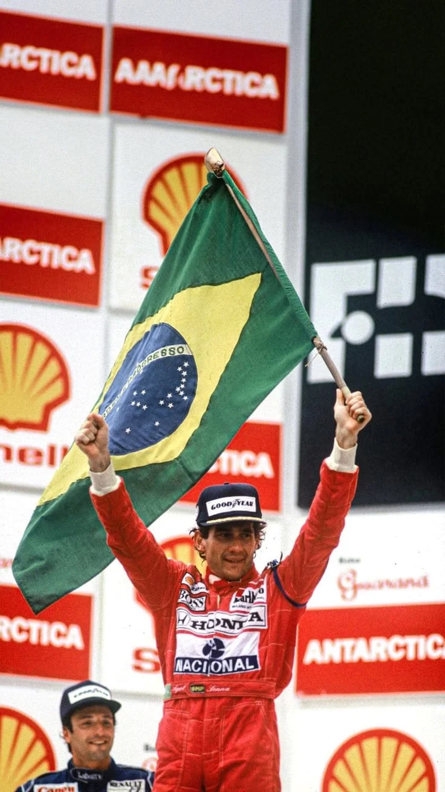
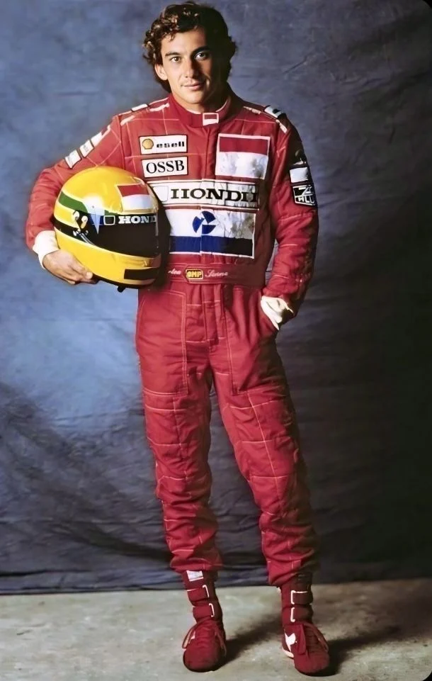
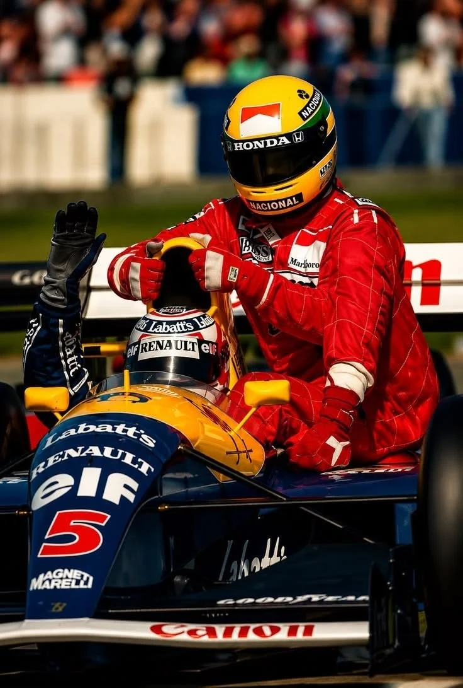
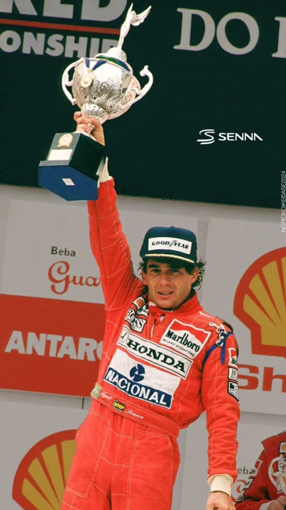
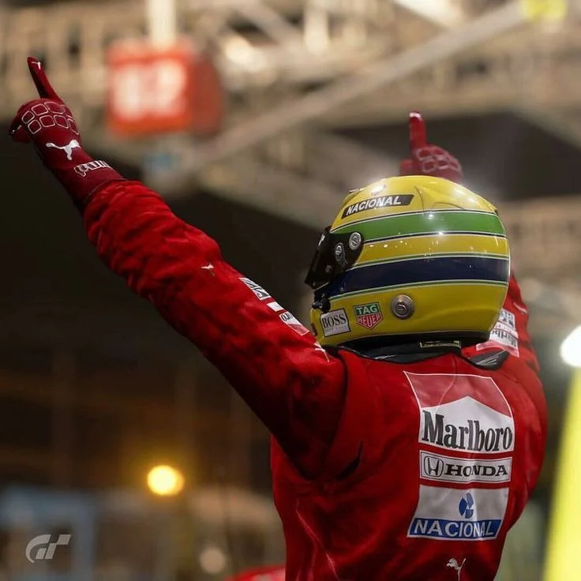
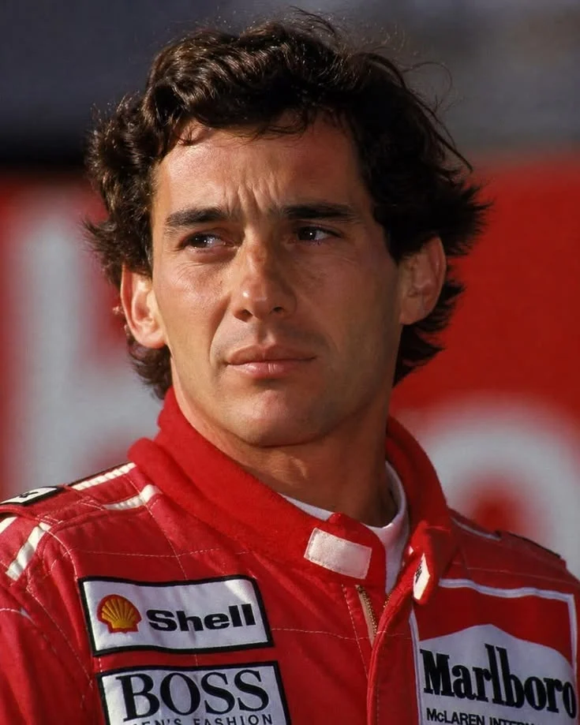

[ 1960 — 1994 ]
MAIS QUE
UM PILOTO.
Ayrton Senna da Silva nasceu em São Paulo, em 21 de março de 1960. Tornou-se um dos maiores nomes da história da Fórmula 1, admirado por sua habilidade nas pistas, determinação e dedicação ao automobilismo.
Conquistou três campeonatos mundiais de Fórmula 1, em 1988, 1990 e 1991, e somou 41 vitórias em Grandes Prêmios. Sua história foi interrompida em 1º de maio de 1994, em Ímola, na Itália, mas seu legado continua vivo.
1984ESTREIA NA FÓRMULA 1
1988PRIMEIRO TÍTULO MUNDIAL
1990SEGUNDO TÍTULO MUNDIAL
1991TERCEIRO TÍTULO MUNDIAL
1994LEGADO E MEMÓRIA
[ PHOTO ARCHIVE / 07 FRAMES ]
MEMÓRIAS
EM ALTA VELOCIDADE.

ARCHIVE / 01O piloto e sua paixão ↗
ARCHIVE / 02Nas pistas da Fórmula 1 ↗
ARCHIVE / 03Um troféu, uma história ↗
ARCHIVE / 04A celebração da vitória ↗ARCHIVE / 05A determinação de um campeão ↗ ARCHIVE / 06O orgulho de representar o Brasil ↗
ARCHIVE / 06O orgulho de representar o Brasil ↗
ARCHIVE / 07Um legado que atravessa gerações ↗[ THE LEGACY ]
UM NOME.
UMA NAÇÃO.
Mais do que resultados, Senna deixou uma referência de disciplina, excelência e paixão pelo esporte. Sua trajetória permanece como parte da memória do Brasil e da Fórmula 1.